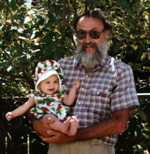
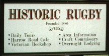

All this time, just one job. What did you do it for . . . ?
Was it the money?
Or the research opportunities?
Or the appreciative co-eds?
Well, I know a few things I got from it! Here are just two . . .
My childhood home.
My formal education.
And I know you have:

Thanks for everything Dad! I hope your retirement brings all you anticipate and more!
Love, Rick